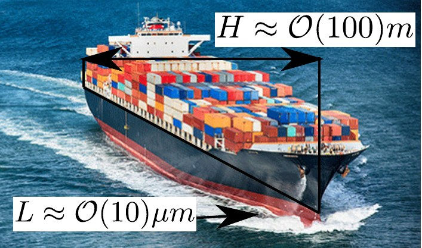

TARAS — Trapped Air Responding to the flow on Anti-drag Surfaces
ANR JCJC proposal (AAPG 2027) · superhydrophobic drag reduction
Superhydrophobic surfaces trap a thin layer of air, the plastron, between the solid and the water. The flow slips over the gas pockets, friction drops, and the idea of an air-lubricated ship hull is not far away. Most models freeze the air–water interface in place; in reality the trapped air responds to the flow — it deforms, it can be dragged out of its cavities — and the flow responds back.
TARAS builds a two-way wall model for this coupling, from the microscopic gas pocket (deflection η, surface tension σ) to the laminar–turbulent transition of the whole channel, to predict when drag reduction survives and when it is lost.
Internship open for 2027 — see Students.
